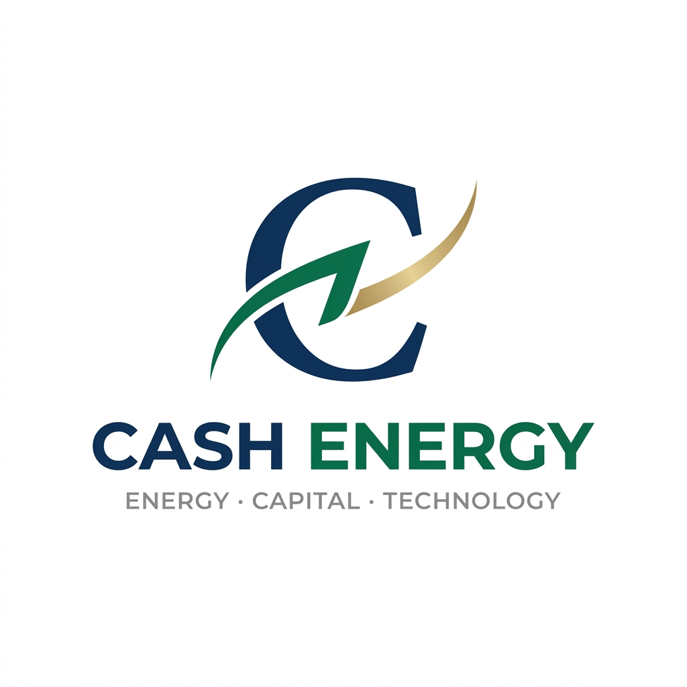
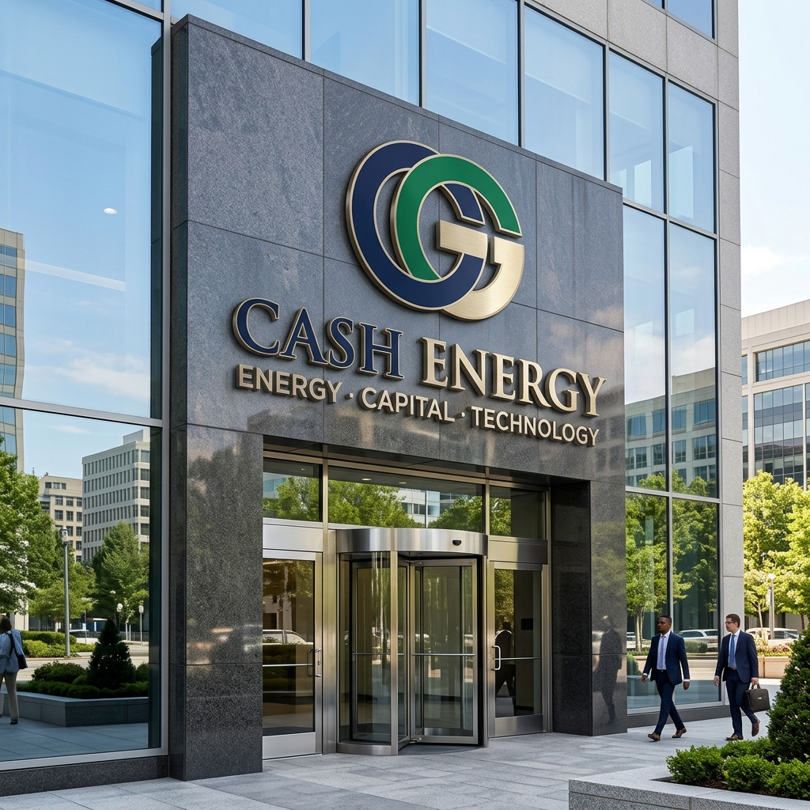

Diseñado atendiendo al criterio de Zelmar: el entrelazado formal de la C con la energía y el capital, con la seriedad y el peso de una compañía bancaria o gran energética.
Líneas precisas y sobrias. La 'C' institucional en azul profundo se entrelaza con el trazo de energía verde y el arco de capital oro champán. Cero cómics, cero dibujos animados.

Así es como verán la marca los directivos, franquiciados de 30 locales y gerentes de empresas: con la autoridad y confianza de una multinacional de primer orden.
